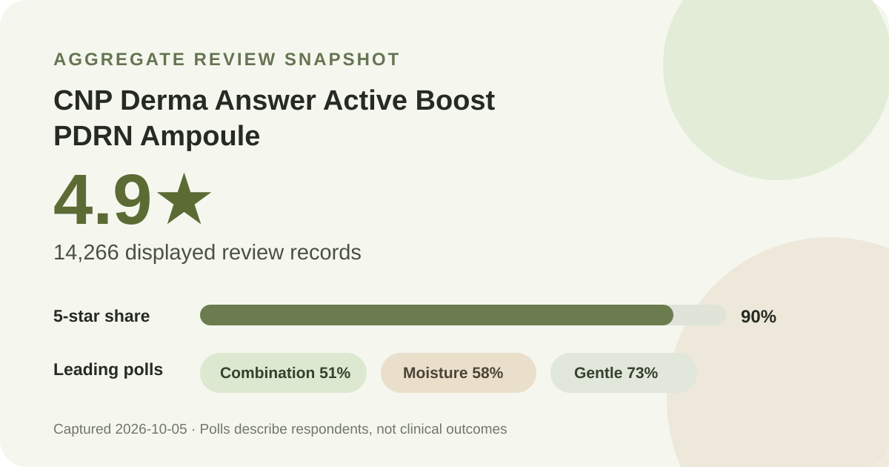
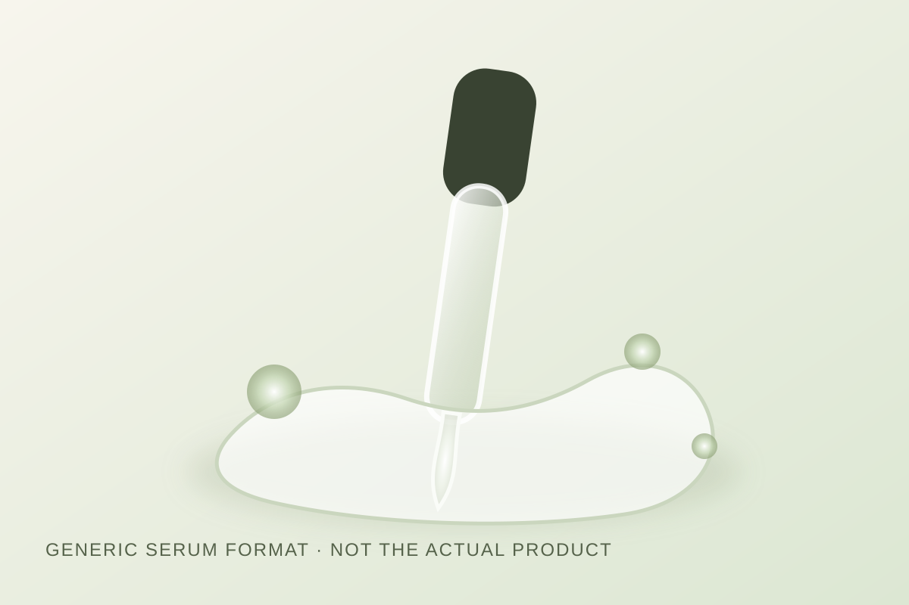

Data captured October 5, 2026. This analysis uses only aggregate retailer displays: rating, review count, rounded star shares, displayed shopper polls, and an anonymous automated theme summary. It does not reproduce or translate an individual review, a reviewer name, or a user photo.

The short version: CNP Derma Answer Active Boost PDRN Ampoule held skincare sales rank 6 in the captured real-time list. Its product header and detailed review view both showed 4.9★ from 14,266 records. The strongest displayed poll responses were combination skin (51%), moisture concern (58%), and gentle (73%).
The captured listing was the CNP Derma Answer Active Boost PDRN Ampoule 30 ml double set, shown in Korean as a firmness/collagen-themed promotion. It appeared at rank 6 in Olive Young Korea's real-time skincare sales ranking at 21:06 KST on October 5, 2026. Rank is a retail momentum signal, not evidence that a formula is more effective than lower-ranked products.
The page displayed a regular price of ₩45,000 and a maximum-benefit promotional price of ₩25,100. Because this was a double-set promotion, that figure should not be compared casually with a single bottle elsewhere. Offers, coupons, gifts, seller, tax, and pack size can all change. Treat the number as a dated Korea price anchor rather than a current quote for another market.

The product header showed 4.9 out of 5 from 14,266 review records. Opening the detailed review panel produced the same rating and count, so the headline numbers were internally consistent at capture time. The panel also displayed a rounded star distribution:
The shares add to 99%, which is a normal consequence of whole-number rounding. They should not be converted into exact review counts. The zero-percent rows also do not prove that no one selected those scores; a small nonzero share can round down to zero.
The review panel separated skin type, skin concern, and irritation response. Those are useful for understanding the composition of the visible poll, but they are not controlled tests and they do not establish causation.
The full displayed skin-type split was 51% combination, 43% dry, and 6% oily. This is a relatively mixed sample, though oily respondents were much less represented. If your routine is designed around oil control, the aggregate offers less direct representation for that question.
The concern poll showed 58% moisture, 27% soothing, and 15% wrinkle/brightening. These labels identify what shoppers selected, not what the product demonstrably achieved. A moisture-leading poll can make the item relevant to a hydration shortlist, but it cannot replace formula review or personal tolerance.
The irritation poll showed 73% gentle, 26% ordinary, and 1% felt irritation. That leans strongly toward the gentle response, yet it is not a patch test and does not guarantee compatibility with reactive skin. The 1% group should not be erased, especially because the shares are rounded and the underlying respondent count for each poll was not exposed.
The retailer's automated summary marked 91% of its recent-review subset as positive and grouped discussion into three broad areas: firmness/barrier impressions, absorption and moisture, and mild-feeling use. I am using those only as anonymous aggregate themes. I am not copying or translating the sentences of any reviewer.
These themes are better treated as questions to investigate than as proof. “Firmness” in a discussion cluster does not demonstrate a measured change. “Barrier” language does not establish repair of a medical condition. “Absorbs well” is a subjective feel report and may vary with dose, climate, and what sits underneath. “Gentle” is similarly personal. The automated summary's subset size and selection rules were not displayed clearly enough to turn its percentage into a buyer-wide rate.
PDRN appears in the retailer-displayed product name, but this capture did not verify a concentration, source, molecular specification, or finished-formula performance. I therefore do not estimate an amount or attribute a clinical effect to the name. A product name is not a laboratory report.
If the ingredient matters to your purchase, verify the current regional ingredient list and any official substantiation attached to the exact pack you are buying. Formulas and labeling can vary by market or change over time. Review totals cannot validate an ingredient percentage, and a high rating cannot tell you which component—if any—drove a shopper's impression.
This listing may belong on a shortlist for someone comparing serum or ampoule formats, especially if the shopper wants a product represented by a large review base and a poll led by combination skin and moisture concerns. The 90% five-star share is a strong satisfaction signal within this retail system, and the product's rank-six position shows current sales momentum.
That is still a conditional shortlist, not a universal recommendation. Dry-skin respondents were substantial at 43%, while oily respondents were only 6%. Anyone prioritizing oil-control evidence, fragrance status, a verified ingredient percentage, or a clinical treatment outcome needs information this aggregate does not provide. If you already have a serum that fits your routine, these data do not prove that switching will improve it.
Combination skin was the largest displayed group at 51%. That means the poll includes substantial combination-skin representation; it does not prove superior performance for that skin type.
The irritation poll leaned gentle at 73%, with 26% ordinary and 1% felt irritation. This is encouraging aggregate context, but “sensitive skin” is not a single condition and the poll is not a safety assessment.
The anonymous automated summary grouped discussion around those impressions. Reviews can describe experiences, but they cannot establish clinical efficacy or causation.
No percentage was verified in this capture. I do not estimate one from the product name, ranking, or reviews.
It is a real retailer-displayed aggregate and the header matched the detailed panel. It is still subject to self-selection, platform rules, rounding, promotions, and the retailer's review system. Use it as one input, not a final verdict.
CNP Derma Answer Active Boost PDRN Ampoule entered this dataset because it was the first valid, not-yet-covered product encountered in the current skincare sales ranking. The evidence is internally consistent: rank 6, 4.9 stars, 14,266 review records, and a 90% five-star share. The displayed polls give useful context around combination-skin representation, moisture concerns, and gentle-feeling responses.
The limits matter just as much. The polls are self-selected, percentages are rounded, the automated theme summary is not a clinical study, and the PDRN amount was not verified. On balance, the page supports a data-informed shortlist for shoppers already considering this format; it does not support a medical claim or a promise of results.
← All K-Beauty Data Desk reviews · Best-seller rankings · Skin-poll browser · About & methodology
Published by The K-Beauty Data Desk · Aggregate data captured 2026-10-05. The source data does not independently verify every buyer's identity. No individual review is reproduced or translated, and I did not test the product on my own skin. I received no free product and am not paid or approved by the brand. Check the source listing and ratings.